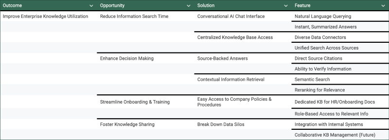
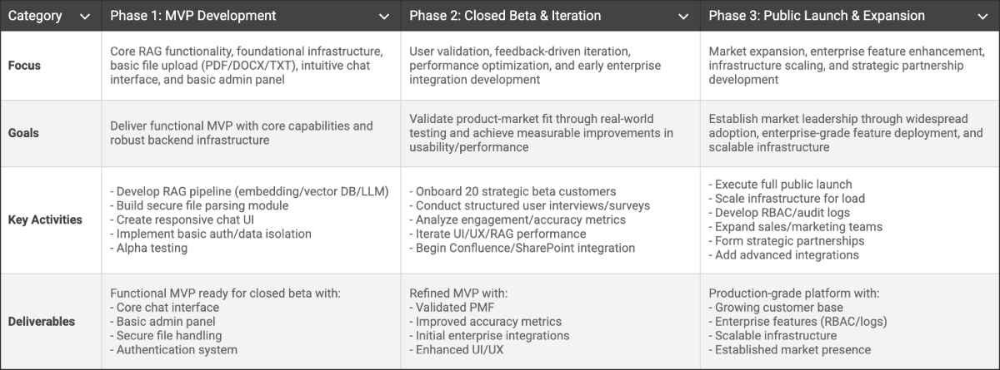
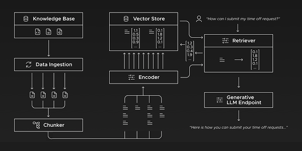
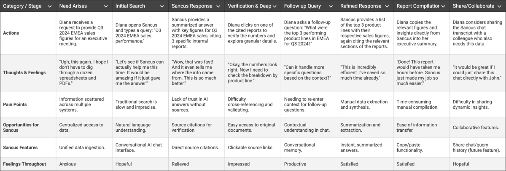

Sancus AI: Chat with Your Data
An Enterprise RAG-QA
Sancus AI is a solution empowering organizations to easily access and leverage their proprietary data through conversational AI, delivering accurate, context-aware insights.
Context & Contribution
Sancus AI was an internal DEUS initiative in 2023 to develop an in-house Retrieval-Augmented Generation (RAG) solution, addressing the growing need for organizations to unlock value from their vast internal data. My contribution:
- Conducted research to identify opportunities, needs, and pain points.
- Aligned product vision, strategy, and roadmap with stakeholders.
- Assisted feature prioritization and product backlog management.
- Created wireframes, prototypes, and high-fidelity designs.
Problem & Opportunity
Enterprises generate and store massive amounts of data that often reside in silos, across disparate documents, databases, internal wikis, and legacy systems. This leads to substantial operational inefficiencies. Key pain points include:
- Information Overload: Employees spend excessive time searching for and gathering information, resulting in significant productivity loss across departments.
- Inconsistent Knowledge: Different departments or individuals may hold diverging versions or interpretations of information, leading to errors and misinformed decisions.
- Slow Decision-Making: Difficulty accessing timely and accurate information hinders agile decision-making processes, impacting business responsiveness.
- Untapped Value: Valuable insights and knowledge within company data remain underutilized, limiting innovation and competitive advantage.
- Onboarding & Training Challenges: New employees struggle to quickly acquire company-specific knowledge, prolonging ramp-up times.
Opportunity Landscape
In 2023, the market for RAG solutions was rapidly expanding. Valued at approximately USD 1.04-1.06 billion and projected to grow at a Compound Annual Growth Rate (CAGR) of 44.7% in the following years. We developed an Opportunity Solution Tree to visualize the problem space and identify potential solutions.
Discovery & Key Insights
Competitive Analysis
After analyzing potential competitors in the B2B RAG space, we realized that:
- Many competitors offered broad data format integrations beyond simple PDFs.
- Data privacy and security were major selling points and concerns.
- API offerings for custom integrations were common.
- Custom document understanding/extraction and UI customization were less common (potential differentiation opportunity).
- Tiered pricing (standard & premium) was the prevalent model.
User Research
Our user research focused on understanding user needs and pain points. This included creating a Jobs-to-be-Done (JTBD) framework to define what users whould hire Sancus for, supplemented by personas for additional context.
Key Insights
- Security and Compliance are Non-Negotiable: Enterprises prioritize robust data security, privacy, and compliance features above all else when adopting new AI solutions.
- User Experience Drives Adoption: An intuitive, natural language interface proves crucial for overcoming the learning curve associated with new enterprise tools and driving broad user adoption.
- Scalability is Paramount: Solutions must handle vast and growing amounts of data, alongside an increasing number of users, without performance degradation.
Vision & Strategy
Our long-term vision extends beyond core RAG to become an intelligent knowledge orchestration platform:
- AI Capabilities: Improve proactive information delivery, automated reporting, and multi-modal knowledge interaction.
- Broader Integration Ecosystems: Expand connectors to include more specialized enterprise software, CRM, ERPs, and external data feeds.
- Personalization & Customization: Offer deeper customization options for user interfaces, answer formatting, and knowledge base curation per department.
- AI-Powered Workflows: Integrate Sancus's capabilities directly into existing enterprise workflows.
- Continuous Learning & Feedback Loops: Establish robust mechanisms for user feedback and AI evaluations to continually refine answer quality and relevance.
Challenges, Risks & Trade-offs
- Technical Complexity: Managing data ingestion, vector databases, and LLM Integration.
- Data Security & Privacy: Ensuring stringent compliance for sensitive enterprise data.
- User Adoption: Driving widespread adoption through intuitive design.
- Integration Diversity: Supporting varied data sources and external partners.
- Cost Management: Balancing development and operational expenses against performance.
- Accuracy vs. Speed: Optimizing for timely, reliable answers.
- Integration Strategy: Prioritizing initial broad file support with plans for deeper system integrations.
- UI Customization: Balancing extensive customization with ease of use.
Go to Market
Our GTM strategy used a phased approach, initially targeting mid-sized tech companies with the Sancus MVP through direct sales, strategic partnerships, and digital marketing to validate our offering and secure early beta customers. This positioned us for successful expansion, with subsequent phases focusing on broader data integrations, enhanced enterprise features, and brand awareness. The revenue strategy centered on a flexible, subscription-based model, including tiered pricing adaptable to data volume, user count, or feature sets, with potential for premium add-ons.
Delivery & Execution
Sancus AI's phased delivery was guided by a comprehensive roadmap, executed through an Agile development methodology, specifically Scrum. This approach ensured strategic alignment and fostered a highly collaborative, cross-functional team environment. Robust, multi-layered QA processes were integral to delivering a high-quality, stable, and reliable solution.
Technical Architecture
The architecture of Sancus AI is designed to efficiently ingest, process, and retrieve information from diverse data sources, enabling seamless conversational interaction with proprietary data.
UX/UI Design
The UX Design process was user-centered, directly informed by discovery research insights. We mapped user journeys to deeply understand user needs, then iteratively progressed designs from wireframes and low-fidelity prototypes to high-fidelity mockups. Continuous validation ensured an intuitive and effective user experience for Sancus.
Achievements & Impact
Key Takeaways
Validation is Continuous
Initial assumptions require ongoing validation as the product evolves and user needs shift.
Importance of Data Quality
The quality of input data is paramount for RAG accuracy; invest heavily in data cleaning and preprocessing.
User Onboarding is Critical
Simplifying the initial setup and data ingestion process is key to rapid user adoption.
Security by Design
Building security features from the ground up, rather than as an afterthought, is crucial for enterprise trust.
Agile Flexibility
The ability to pivot based on user feedback and market changes is essential in the fast-evolving AI landscape.
Get in touch if you want a deeper dive or to discuss how my skills and expertise can help on your challenges.
More about me on LinkedIn. Let's connect!